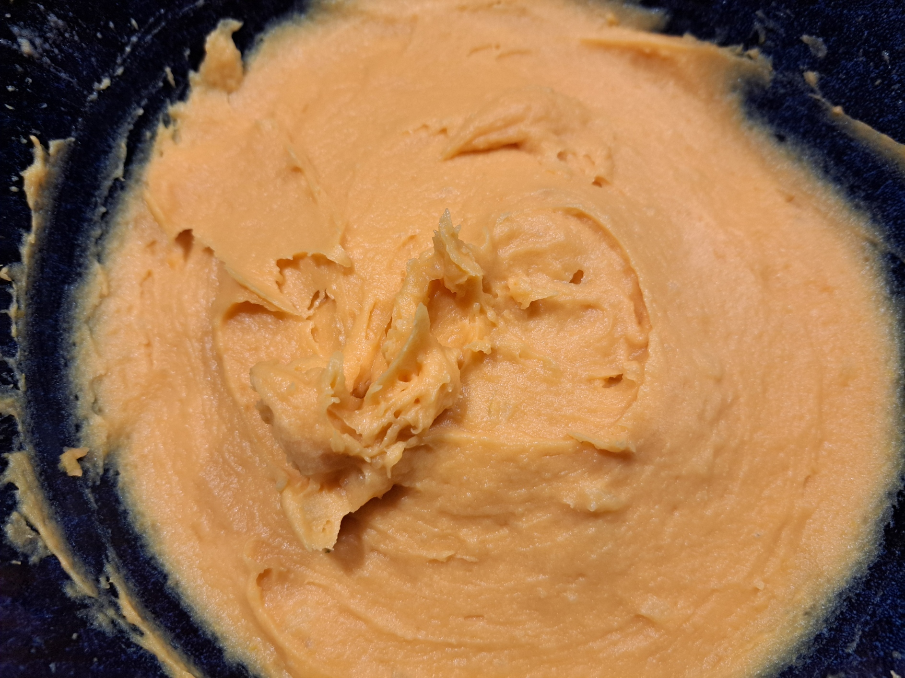

Savory Mashed Sweet Potatoes

Instructions
1
Steam the Potatoes
Place the potatoes and sweet potatoes in a steamer basket. Steam for 20–25 minutes, or until both are very tender when pierced with a knife.
2
Combine in a Bowl
Transfer the cooked potatoes and sweet potatoes to a large mixing bowl.
3
Add the Creaminess
Add butter and sour cream. Season with salt, and black pepper if desired.
4
Mash
Mash everything together until the texture is as smooth or rustic as you prefer. Adjust seasoning, butter, or sour cream to taste.
5
Serve
Serve hot as a savory side dish.